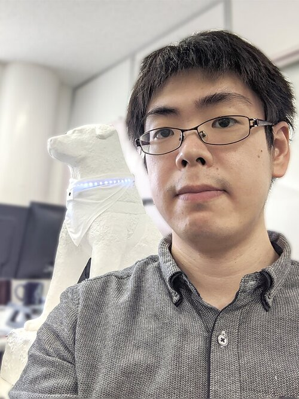

更新情報・お知らせ
- イベント情報
- -
- 2022/03/18 - 2022/08/31
- 制作している『やわらかアニマロイド』が日本科学未来館特別展「きみとロボット ニンゲンッテ、ナンダ？」に出展協力します．イベント情報はこちら（オープンアクセス）
- 論文掲載情報
- 詳細はResearch mapを参照
- 2022/01/25
- IEEE Robotics & Automation Lettersにソフトモジュラーロボットに関する論文が掲載されました．論文はこちら（オープンアクセス）
- 2022/-/-
- 個人WEBページをリニューアルしました．以前のURLはこちら
» 過去ログ
自己紹介
小川 純 Ph.D. (情報科学)
やわらかモノづくりから生まれる材料、構造やセンサに機械学習（AI技術）を融合させることで、やわらかいモノの応用研究から社会実装までを目指す情報科学者。
情報科学にソフト材料と3Dプリンティングをクロスオーバーさせること（クロス・ソフトネス）でやわらかさに起因する生命感・知能を形に付与し、人の心にポジティブに作用する新しいコミュニケーション媒体「クリエイティブ・ソフトマシン」を開発する研究に従事。
 Facebook
Facebook
研究者情報
- 現所属
- 山形大学 有機材料システムフロンティアセンター
- 職位
- 准教授
- 学位
- 博士（情報科学），授与機関：北海道大学（2015年3月）
- 研究分野
- やわらかアニマロイド（ソフトマターロボティクス），高分子ゲル，モジュラーロボット，物理レザバー計算，食感分析，進化計算
- 国籍
- 日本
- 言語
- 日本語 (native), 英語
連絡先・オフィス情報
- Emalアドレス
- jun.ogawa AT yz.yamagata-u.ac.jp
- Gmalアドレス
- jun.ogawa.office AT gmail.com
- TEL
- +81-238-26-3218
- FAX
- -
- 郵送
- 〒992-8510 山形県米沢市城南4-3-16 山形大学工学部11号館401室
経歴
- 2019.3 - present
- プロジェクト准教授
（ソフト＆ウェットマター工学研究室，山形大学有機材料システムフロンティアセンター） - 2021.4 - present
- 技術リーダー
（やわらか3D共創コンソーシアム） - 2020.4 - present
- 協力研究者
（アークレブ・アカデミア・ストラテジスト・ネットワーク） - 2017.2 - 2019.2
- 准教授
（会津大学復興支援センター） - 2015.3 - 2017.1
- 学振特別研究員PD
（自律系工学研究室，北海道大学） - 2015.9 - 2016.8
- ポスドク研究員
（Creative Machines Lab，米国コロンビア大学） - 2014.4 - 2015.3
- 学振特別研究員DC1
（自律系工学研究室，北海道大学）
学歴
- 2015.3
- 北海道大学 大学院情報科学研究科 情報理工学専攻 複雑系工学講座 自律系工学研究室 博士課程修了（2年短縮）
指導教官：山本雅人（北海道大学教授） - 2014.3
- 北海道大学 大学院情報科学研究科 複合情報工学専攻 複雑系工学講座 自律系工学研究室 修士課程修了
指導教官：山本雅人（北海道大学教授） - 2012.3
- 北海道大学 工学部 情報エレクトロニクス学科 情報工学コース 複雑系工学講座 自律系工学研究室 学士課程修了
指導教官：古川正志（北海道大学名誉教授）
競争的資金・国プロジェクト
- 種別
- 獲得した競争的資金に基づく研究プロジェクト
- 2022.4 - 2025.3
- （継続中）日本学術振興会・科研費・若手研究
（研究代表・総額340万） - 2021.3 - 2026.3
- （継続中）NEDO若手研究者発掘支援事業・共同研究フェーズ
（研究代表・総額1120万(~2022時点)） - 2017.4 - 2019.4
- （完了）日本学術振興会・科研費・若手研究（B）
（研究代表・総額325万） - 2015.4 - 2017.1
- （完了）日本学術振興会・特別研究員奨励費DC1(2014.4-2015.3)/PD(2015.4-2017.1)
（研究代表・総額300万） - 種別
- 参加している国プロジェクト
- 2019.4 - 2023.4
- （継続中）内閣府SIP第2期『CPS構築のためのセンサリッチ柔軟エンドエフェクタシステムの開発と実用化』
（登録研究員） - 2019.4 - 2023.4
- （継続中）JST OPERAオープンイノベーション機構連携型研究領域『CNVFAB』
（研究協力） - 2021.4 -
- （継続中）慶応義塾大学2040独立自尊プロジェクト『革新的ソフトマター統合プロジェクト』
（外部研究者） - 2019.4 - 2021.9
- （完了）JST OPERA事業『ソフトマターロボティクスコンソーシアム -SOFUMO-』
（登録研究員）
知的財産権・特許出願
- 特願2021-165993
- 「汚れの除去方法及び汚れ除去装置」
（小川純，志賀郁也，渡邉洋輔，川上勝，古川英光，2021年） - 特願2021-14557
- 「ロボット構成モジュール、ロボット部品」
（小川純，森智晴，渡邉洋輔，川上勝，古川英光，2021年） - 特願2019-192167
- 「水生生物模型」
（古川英光，川上勝，小川純，山田直也，2019年）
出演メディア情報
TV出演・報道記事・イベント情報の詳細はResearch mapを参照